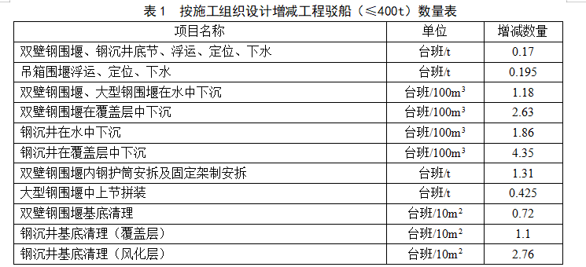
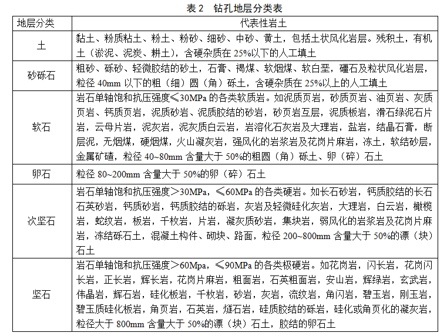
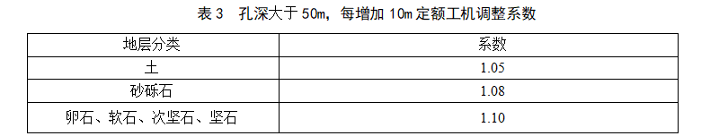
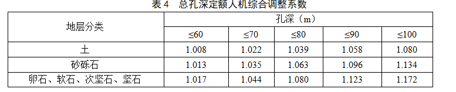

本章包括挖基及抽水、围堰及筑岛、船上设备及锚碇、钻孔桩与挖孔桩、钢筋混凝土方桩及管桩、管柱、沉井、扩大基础及承台、墩台9节。
第一节 挖基及抽水
一、无水挖基指开挖地下水位以上部分，有水挖基指开挖地下水位以下部分。开挖淤泥、流砂不分有水、无水均采用同一定额。
二、开挖基坑定额不含坑壁支护，需要时应根据设计确定的支护方式采用相应定额。本册定额仅编制了挡土板、钢筋混凝土围圈和钢板桩支
护子目，当设计采用锚杆、喷射混凝土、土钉等支护方式时，可采用《铁路工程预算定额 第一册 路基工程》相关子目。
三、钢板桩支护仅为坑壁挡土不防水，若需防水应采用钢板桩围堰定额。若需设置内支撑，可采用钢板桩内支撑定额。
四、在同一基坑内，不管开挖哪一层深度均执行该基坑总深度定额。
五、基坑开挖定额中弃方运距为10m，如需远运，按《铁路工程预算定额 第一册 路基工程》相关子目另计。
六、井点降水定额适用于地下水位较高的地区，井点管安拆子目中已包括井点管、总管及附件的摊销。
七、采用井点降水后的基坑开挖按无水计。
八、采用无砂混凝土管井降水时，水泵的抽水费用另计。每座无砂混凝土管井需配置1台水泵，水泵的选型应根据工点的设计涌水量确定。
九、工程量计算规则
1. 基坑开挖的工程量按基坑设计容积计算。
2. 挡土板支护的工程量按所支护的基坑开挖数量计算。
3.钢板桩支护工程量按钢板桩设计重量计算。
4. 基坑回填数量=基坑开挖数量-基础（承台）圬工数量。
5. 基坑深度一般按坑的原地面中心高程、路堑地段按路基成形断面路肩设计高程至坑底高程计算。
6. 井点降水使用费的计算，以50根井点管为一套，不足50根的按一套计。使用天数按施工组织设计确定的日历天数计算，24小时为一天。
7. 与无砂混凝土管井配套的水泵台班数量，按施工组织设计确定的日历天数计算，24小时为一天，每天每台水泵计3个台班。
8. 基坑抽水工程量为地下水位以下的湿处开挖数量。已含开挖、基础浇（砌）筑及至混凝土终凝期间抽水。
9. 抽静水定额仅适用于排除水塘、水坑等的积水。工程量按设计抽水量计算。
第二节 围堰及筑岛
一、土坝、塑料编织袋围堰及筑岛填心定额按就地取土编制。
二、打钢板桩定额和钢板桩支护系按打拔和每使用1个季度分别编制，使用费按施工组织设计确定的时间计算，不足1个季度的按1个季度计算。
当施工组织设计确定不再拔除钢板桩时，按一次摊销计算。钢板桩定额中不含钢板桩围堰内支撑的制安拆，发生时另行计算。内支撑材料用量参照
钢板桩围堰外围所包围的断面积每10平方米单层面积所需内支撑钢料870kg，其中槽钢464kg，钢管246kg，钢板160kg。
三、钢围堰分为一般钢围堰和大型钢围堰。一般钢围堰是指围堰外缘所包围的断面积≤1000m2。大型钢围堰是指围堰外缘所包围的断面
积≤3000m2。
四、双壁钢围堰在水中下沉定额中，按摊销量计入了定位船（或定位桩）至双壁钢围堰上、下兜缆，兜缆数量不得另计。
五、定额中的定位船适用于一前一后，施工组织设计每增减一艘定位船，有关定额中工程驳船（≤400t）的台班应增减的数量见表1。

六、双壁钢围堰下沉定额中未含井壁填充混凝土，需要时按填充混凝土定额另计。
七、大型钢围堰底节拼装定额不包括拼装场地的处理，需要时另计。
八、大型钢围堰覆盖层下沉、基底清理、壁内填充及封底混凝土采用一般双壁钢围堰下沉覆盖层定额。
九、双壁钢围堰和大型钢围堰拼装定额子目，未含钢围堰摊销量，其摊销量和回收量应由设计方案确定。
十、吊箱围堰定额适用于单壁吊箱围堰，拼装定额中已含吊箱围堰摊销量。
十一、工程量计算规则
1. 土坝、塑料编织袋围堰的工程量，长度按围堰中心长度，高度按设计的施工水位加0.5m计算，不包括围堰内填心数量，需填心时，按筑岛
填心定额另计。
2. 钢围堰浮运的工程量按设计确定所需的浮运重量计算。
3. 钢围堰拼装的工程量按设计的围堰身重量计算，不包括围堰平台的重量。
4. 钢围堰在水中下沉的工程量按围堰外缘所包围的断面积乘以设计施工水位至原河床面中心高程的高度计算。
5. 钢围堰在覆盖层下沉的工程量按围堰外围所包围的断面积乘以河床面中心高程至围堰刃脚基底中心高程的高度计算。
6. 钢围堰拆除的工程量按施工组织设计确定的拆除数量计算。
7. 钢围堰基底清理的工程量按围堰刃脚外围所包围的断面积计算。
8. 拼装船组拼拆除的工程量按设计使用次数计算。
9. 双壁钢围堰下沉设备制安拆的工程量按设计使用墩数计算。
第三节 定位船、导向船及锚碇设备
一、一般定位船舱面设备定额中含定位船至导向船的拉缆摊销量，大型钢围堰的定位船舱面设备定额中含定位船至钢围堰的拉缆摊销量。
二、锚碇系统定额中均已含抛锚、起锚、锚绳、锚链安拆及摊销等全部内容。
三、工程量计算规则
锚碇的工程量按施工组织设计确定的数量计算。
第四节 钻孔桩及挖孔桩
一、孔深指护筒顶高程至桩底设计高程的深度。钻孔长度，陆上指地面高程、水上指河床面高程、筑岛施工指筑岛平面高程、路堑地段指路基
设计成形断面路肩高程至桩底设计高程的长度。定额单位“10m”指钻孔长度。
二、本册定额钻孔地层分类见表2。

三、旋挖钻、冲击钻和回旋钻钻孔定额均适用于孔深50m以内，若孔深大于50ｍ时，超过部分每增加10ｍ（含不足10ｍ部分），定额中人工和
机械台班消耗量以50ｍ为基数按表3系数调整。

为方便使用，可按总孔深采用表4综合系数调整定额中人工和机械台班消耗。

大直径（桩径≥2.5m）钻孔桩为陆上施工时，则取消定额中的水上船舶数量，并将定额中斜撑桅杆式起重机≤20t数量抽换成50t履带吊机数量。
四、陆上钢护筒直径≥2m时可以抽换。
五、水上钢护筒按一次摊销计，不另计拆除及整修的费用，也不扣除回收料的残值。陆上钢护筒埋设适用于一般土层，当遇到特殊地质情况，
设计或施工不需要拔出钢护筒时，按钢护筒一次摊销的原则另行分析费用。
六、钢护筒和双壁钢围堰内导向护筒定额中已含护筒的摊销量。
七、水上钻孔平台适用于可直接插打支撑桩形成平台的地质条件，若需加固应另行计算加固费用。
八、挖孔桩定额在同一根桩内不论挖何种地层，均执行总孔深定额。
九、挖孔桩桩身混凝土定额适用于普通混凝土，当自孔底及孔壁渗入的地下水的上升速度大于6mm/min时，应抽换为水下混凝土。挖孔桩桩身
钢筋采用钻孔桩钢筋笼定额。
十、环切桩头定额不含桩头弃运，其弃运参照石方外运另计。
十一、工程量计算规则
1. 钻孔桩钻孔深度，陆上以地面高程、水上以河床面高程、筑岛施工以筑岛平面高程、路堑地段以路基设计成形断面路肩高程至桩尖设计高
程计算。当采用管柱作为钻孔护筒时，钻孔深度应扣除管柱入土深度。
2. 钻孔桩桩身混凝土工程量按设计桩长（桩顶至桩底的长度）加1m乘以设计桩径断面积计算，不得将扩孔因素计入工程量。
3. 水中钻孔工作平台的工程量，当桩径≤2.0m，平台面积按承台平面尺寸每边外扩2.5m计算面积，当桩径≤2.5m，平台面积按承台平面尺寸
每边外扩3.5m计算面积。当桩径≤3.5m，平台面积按承台平面尺寸每边外扩5m计算面积。
钢围堰钻孔平台按围堰外缘尺寸每边加1m计算面积,钻孔平台面积不包括运输、起重设备走行通道的支栈桥面积。
4. 钢护筒和钢导向护筒的工程量按设计重量计算，包括加劲肋及连接部件的重量，不包括固定架的重量。
5. 钻孔用泥浆和钻渣外运定额子目应配套使用，其工程量均按钻孔体积计算，计算公式为：
V=0.25πD2H(m3)
式中D——设计桩径；H——钻孔深度（m）
6. 声测管的数量按设计钢管重量计算，不含预埋钢板等固定件的重量。
7. 环切桩头工程量以桩径大小按设计桩基根数计算。
8. 挖孔桩开挖工程量按护壁外缘包围的断面积乘以设计孔深计算。
9. 挖孔桩桩身混凝土工程量按设计桩顶至桩底的长度乘以设计桩径断面积计算，不包括护壁混凝土的数量。护壁混凝土按相应定额另计。
第五节 钢筋混凝土方桩与管桩
一、打桩定额适用于黏性土、粉土、砂性土地质条件，系按打直桩编制。如打斜桩，人工和机械台班数量应分别乘以1.15和1.21的系数。陆
上锤击下沉大直径预应力混凝土管桩定额子目，适用于黏性土、粉土、砂性土地质条件，定额消耗量已含接桩防腐涂料、钢桩帽、送桩器的摊销
量，已考虑施工损耗操作，采用锤击沉桩施工工艺编制，采用其他方式沉桩的另行分析。
二、钢筋混凝土方桩与钢筋（预应力）混凝土管桩定额中已含导桩、送桩的摊销量及凿除桩头的摊销量。
三、工程量计算规则
1. 钢筋混凝土方桩沉入的工程量按设计桩顶至桩尖的长度乘以桩断面积计算。
2. 钢筋（预应力）混凝土管桩按设计桩顶至桩尖的长度计算。
3. 振动下沉钢管桩的工程量按钢管桩的设计重量计算。
4. 大直径预应力混凝土管桩数量按设计桩顶至桩尖的长度计算。
第六节 管柱
一、管柱下沉定额未含射水吸泥管路的数量，需要时按沉井外管路中的射水吸泥管路定额另计。
二、管柱钻岩定额中已包含封端。
三、管柱内钻孔及混凝土浇筑参考相应钻孔桩定额。相应基础为水上施工时，可参考水上施工钻孔桩定额。
四、工程量计算规则
1. 管柱下沉定额中未含管柱数量。预制管柱的工程量按设计柱顶至柱底的长度计算。
2. 管柱下沉的工程量按设计的入土深度计算。
第七节 沉井
一、定额中的薄壁轻型沉井，适用于利用泥浆套和空气幕下沉的沉井工程。
二、浮运钢沉井下沉设备及浮运、定位、下水可采用双壁钢围堰定额。
三、沉井吸泥下沉定额中未含射水吸泥等所用的各种管路。使用时按沉井内外管路制安拆定额另计。
四、射水吸泥管路定额适用于管柱、沉井、双壁钢围堰等工程射水吸泥用。
五、工程量计算规则
1. 沉井陆上下沉的工程量按沉井外缘所包围的断面积乘以原地面或筑岛平面中心高程至沉井刃脚基底中心高程的高度计算。
2. 浮运钢沉井在水中下沉的工程量按钢沉井外缘所包围的断面积乘以设计施工水位至原河床面中心高程的深度计算。
3. 浮运钢沉井在覆盖层中下沉的工程量按钢沉井外缘所包围的断面积乘以河床面至沉井刃脚基底中心高程的高度计算。
4. 沉井基底清理的工程量按沉井刃脚外缘所包围的断面积计算。
5. 钢沉井工程量按照设计数量计列，其辅助临时钢结构按施工组织设计数量计列。
第八节 墩台
一、墩台高度为基础顶面或承台顶面至墩台帽、盖梁顶或0号块底的高度。
二、墩顶支撑垫石和防震落梁混凝土挡块可采用顶帽混凝土子目。
三、门式墩盖梁混凝土、钢筋、预应力筋可采用支架法现浇箱梁的相关子目。
第九节 斜拉桥索塔
一、斜拉桥索塔定额适用塔高（承台顶至塔顶的高度）200m以内。斜拉桥索塔定额分为塔座、下塔柱、中塔柱、上塔柱及横梁。塔座为
承台顶至下斜腿底；下塔柱为塔座顶至下横梁底；中塔柱为下横梁底至上横梁底或两塔肢交汇处；上塔柱为中塔柱顶至塔顶（含锚固区）。
二、劲性钢骨架的工程量按设计钢结构重量计算，不包括钢筋的重量。
三、斜拉桥索塔定额适用于水上，若塔墩在岸边或陆上，则取消定额中的船舶数量，并将定额中起重船数量抽换成50t履带吊机数量。
本章包括钢筋混凝土拱桥，预应力混凝土简支梁，预应力混凝土连续箱梁，钢梁及钢桁梁，钢-混凝土结合梁，钢拱梁，钢斜拉桥，钢梁
油漆，支座，桥面，桥上设施*节。
第一节 钢筋混凝土拱桥
拱上墙柱、桥面板及墩上结构定额亦适用于钢管拱。
第二节 预应力混凝土简支梁
一、梁体混凝土定额未含蒸汽养护，蒸汽养护按《铁路工程基本定额》相关子目另计。
二、钢筋制安定额未含梁体预埋钢件，预埋钢件以设计数量按本册定额第二章第二节相关子目另计，需防腐处理时，将定额中普通钢件
抽换为防腐钢件。
三、600t和900t搬梁机分为轮胎式和轮轨式两种，适用于制梁场内搬梁、装车。2×450t轮轨式提梁机适用于制梁场旁边架梁和提梁至桥
上装车。定额中未含走行轨及地基处理内容，走行轨及地基处理应根据现场情况按设计数量另计，列入大临工程。
四、预应力混凝土梁现浇分支架法现浇和移动模架法现浇两种。支架法现浇定额中未含梁下支架及地基处理内容，应根据施工组织设计
采用的施工方法和数量另计；移动模架法现浇定额适用于跨度≤32m梁，大于此跨度时另行分析，移动模架法现浇箱梁钢筋采用支架法现浇箱
梁钢筋定额子目。
五、预应力混凝土简支梁后张法纵向预应力筋制安定额适用于橡胶棒制孔，当设计采用波纹管制孔时，波纹管的费用按设计数量另计。
六、架设和运输箱梁定额仅适用于坡度小于等于20‰地段，当用于坡度大于20‰，小于等于30‰地段时，架设箱梁定额子目人工和机械
台班数量乘以2.0系数，箱梁每运输1km定额子目人工和机械台班数量乘以1.7系数。
七、预应力混凝土梁架设定额中未含梁和支座数量及支座的安装，梁按预制或价购另计，支座按成品价格另计；支座安装按本册定额第
二章第九节相关子目另计。
八、门式起重机架梁定额适用于单独铺架且墩台附近场地平坦，场地最小宽度能满足运梁车与吊机能同时运行的工程。
九、桥头线路加固定额仅适用于没有做路桥过渡段设计的架桥机架设成品梁的桥梁。
十、工程量计算规则
1. T梁架设机械和箱梁搬、运、架机械安拆调试数量按施工组织设计确定的次数计算。
2. 预制场内移T梁数量，不论其移动次数均按设计预制T梁片数计算；预制场内搬梁机搬运箱梁数量，不论其搬运次数均按设计预制箱
梁孔数计算。包括由制梁台座至存梁台座，再由存梁台座至装梁台座的搬运。
3．预制场内轮轨式移梁台车移箱梁数量，按设计移梁孔次数计算。从制梁台座起算，每一孔梁从一个台座移至另一个台座，每移动一
次即为“1孔次”。
4. 箱梁架设应区分隧道口首末孔（首孔为架桥机出隧道口架设与桥台连接的简支箱梁，末孔为架桥机架设隧道进口端与桥台连接的简
支箱梁）和其他孔，按设计架设孔数计算，其中隧道首末孔，不论桥梁座数，两座隧道之间各计1孔首孔和1孔末孔；变跨数量按设计不同
梁跨变化次数计算。
5. 移动支架安拆数量按设计支架重量乘以安拆次数计算，移动模架安拆数量按设计模架（不含模板）的重量乘以安拆次数计算。
6. 移动支架（模架）纵向移位数量按施工组织设计确定的该移动支架（模架）施工的首孔中心点至末孔中心点的距离计算。
第三节 预应力混凝土连续箱梁
一、梁体钢筋制安定额未含梁体预埋钢件内容，预埋钢件以设计数量按本册定额第二章第二节相关子目另计，需防腐处理时，将定额中
普通钢件抽换为防腐钢件。
二、预应力筋制安定额中已含波纹管制安。
三、连续箱梁混凝土浇筑定额中未含墩旁托架、边跨膺架、合龙段吊梁及临时支座等项目，需要时根据施工组织设计数量另计。
四、预应力连续箱梁拼接顶推定额中已含顶推用千斤顶、托架、制动梁、导向梁、顶推锚栓、千斤顶顶座、墩顶临时支座、导梁上拉
杆、锚梁、滑板等的摊销量。但未含顶推用的导梁制安拆，顶推用的导梁需按导梁定额另计。
五、悬浇箱梁定额适用墩高30m以内，当墩高超过30m时根据施工组织方案另行分析。
六、悬浇箱梁挂篮安拆定额中已含挂篮摊销量。
七、挂篮安拆定额单位“t次”，“t”指挂篮重量，“次”指安拆次数，一个悬浇段算一次。
八、桥梁转体按墩顶转体工况编制，适用于墩高 20m 及以下工况：当用于墩底转体 工况时，人工和施工机具台班消耗量乘以 0.85 的
系数。
九、球饺骨架、滑道、撑脚、砂箱安装定额未包含球饺骨架、滑道、撑脚、砂箱材 料消耗量，球饺骨架、滑道、撑脚、砂箱材料费用
按规格型号另计。
十、球饺安装定额未含球饺费用，球饺费用应按规格型号另计。
十一、转体定额不含转体监控测量、配重及称重费用。
十二、工程量计算规则
1．球饺骨架、滑道、撑脚、砂箱安装定额工程数量按设计球饺骨架、滑道、撑脚、 砂箱整体重量以 t 计算。
2.球铰安装定额工程数量按设计转体桥墩个数计算。
3.水平转体定额工程数量按设计转体桥墩个数计算。
第四节 钢桁梁及钢板梁
一、钢梁架设定额中未含钢梁和支座的数量及支座安装。钢梁和支座的费用按成品价格另计，支座安装按本册定额第二章第九节相关
子目另计。
二、钢桁梁连接拖拉架设法的连接及加固定额中未含枕木垛，需要时根据施工组织设计数量按相关子目另计。
三、钢桁梁悬臂架设定额中未含施工临时加固杆件。
四、钢梁架设定额中的高强度螺栓带帽系按平均单重0.5kg/套编制，当设计采用的单重与此不符时，可调整。
五、工程量计算规则
钢梁的工程量按设计杆件和节点板的重量计算，不包括附属钢结构、检修设备走行轨道和支座、高强度螺栓的重量。
第五节 钢-混凝土结合梁
一、路基上拼装配合拖拉法适用情况：①不可封闭的跨线、跨路施工，且全桥全部为钢-混凝土结合梁；②所架梁跨距台后路基较近。
二、墩顶吊拼分为直接吊拼和墩顶吊拼配合拖拉法两种工艺。其中直接吊拼适用于可封闭的跨线、跨路施工；墩顶吊拼配合拖拉法适
用于不可封闭的跨线、跨路施工。
三、工程量计算规则
1. 钢梁的工程量按设计杆件和节点板的重量计算，不包括附属钢结构、检修设备走行轨道和支座、高强度螺栓的重量。
2. 钢-混凝土结合梁拖拉法施工工程量按质量与长度的乘积计算。
第六节 钢拱梁
一、钢管拱悬臂架设定额适用先拱后梁、桥面拼装及竖转适用先梁后拱的施工工艺。
二、钢箱拱和钢桁拱架设定额适用于拱梁同步的悬臂扣挂施工工艺。
三、钢管拱和钢箱拱架设定额中未含钢管拱、钢箱拱的数量，钢管拱和钢箱拱的费用按成品价格另计。
四、钢管（箱）拱架设定额中未含缆索吊装设备，需要时可根据施工组织设计按缆索吊定额另计。
五、钢管（箱）拱系杆安装定额适用于高强度钢丝束，设计采用的材质与定额不同时可抽换。
六、钢桁拱架设定额中未含钢桁拱梁和支座的数量及支座安装。钢桁拱梁和支座的费用按成品价格另计，支座安装按本册定额第二章
第九节相关子目另计。
七、钢拱扣索塔架定额中未含扣索的制安拆。扣索制安拆的费用根据施工组织设计数量按相关定额另计。
八、钢管拱外包钢筋混凝土定额中已包含钢管拱范围内材料的水平与垂直运输。
九、钢管拱外包混凝土定额中，模板 、分配梁 、模板背带按三次摊销不计残值编制。
十、工程量计算规则
1. 钢管（箱）拱的工程量按设计重量计算，不包括支座和钢管拱内混凝土的重量。
2. 系杆的工程量按设计重量计算，不包括锚具、保护层（套）的重量。
3．钢桁拱的工程量按设计杆件和节点板的重量计算，不包括附属钢结构、检修设备走行轨道和支座、高强度螺栓的重量。
4．钢拱扣索塔架根据施工组织设计按设计重量计算。
第七节 钢斜拉桥
一、钢桁梁悬臂架设定额中未含钢梁和支座的数量及支座安装。钢梁和支座的费用按成品价格另计，支座安装按本册定额第二章第九
节相关子目另计。
二、斜拉索挂索定额中未含索的数量。斜拉索的费用按成品价格另计。
三、工程量计算规则
1. 斜拉索的工程量按设计斜拉索重量计算。不包括锚具、锚板、锚箱、防腐料、缠包带的重量。
2. 斜拉索张拉的工程量按设计数量计算，每根索为一根次。
3. 斜拉索调索的工程量按设计要求计算，每根调整一次算一次。
4. 斜拉索钢梁的工程量按设计杆件和节点板的重量计算，包括锚箱重量，不包括附属钢结构、检修设备走行轨道和支座、高强度螺
栓的重量。
第八节 钢梁油漆
钢梁油漆适用于工地油漆的最后一道面漆，不含工厂油漆。
第九节 支座
支座安装定额中未含支座本身，支座的费用按成品价格另计。
第十节 桥面
一、小型预制构件预制、安装包括遮板、步板、盖板及挡砟块等构件。
二、铁路桥面钢筋混凝土栏杆安装定额中已含套筒，但未含预埋件，预埋件应按相关子目另计。
三、公路桥面结合板预制、安装及湿接缝混凝土定额，仅适用于公铁两用桥的公路桥面板与钢梁结合的工程。结合板的钢筋、预应力
筋或钢绞线可采用预制梁相关定额。公路桥面其他设施（如步行板、人行道板、栏杆、伸缩缝、路缘石、排水管路等）可按公路工程定额
相关子目另计。
四、可换伸缩缝安装子目以TSF-IOO 型铝合金可换伸缩缝编制， 当设计采用其他型号铝合金可换伸缩缝的，应抽换使用。
五、工程量计算规则
1. 钢筋混凝土栏杆的工程量按设计长度以“双侧米”计算。
2. 梁端伸缩缝应区分材质和有砟轨道、无砟轨道，按设计伸缩缝长度计算。
第十一节 桥上设施
一、玻璃钢电缆槽定额中未含支架，需要时按支架制安定额另计。
二、箱梁引下式排水管道包含箱梁本身的排水管道和经汇水管顺桥墩引下的管道。
三、桥梁综合接地连（焊）接定额，墩、梁连接子目包含预埋连接钢件，其余子目仅包含焊接等内容。因接地所需新增的钢筋仍分别
采用相应的基础、墩台、梁体钢筋定额。墩、梁连接指梁上接地端子与墩顶接地端子之间的钢结构导电件的制安。
四、工程量计算规则
1．防震落梁设施按设计钢件重量计算。
2．箱梁排水管道应区分有砟轨道、无砟轨道和排水方式，按设计梁长计算。
3．梁内、墩身和基础中由于接地而额外增加的钢筋数量应计入相应部位的钢筋工程数量。设计采用的不锈钢接地端子及尾部压入的
30cm钢筋作为整体考虑，其费用按设计数量乘以成品价格另计。
4.桩基础，明挖基础，梁墩之间综合接地的工程量按设计接地端子 “处”计算，1个接地端子为1处。
一、本章包括现浇框架式桥涵、预制框架式桥涵、顶进框架式桥涵。
二、顶进作业的接缝处隔板与钢插销制安定额，适用于顶拉法及中继间法。
三、框架身外沿底宽是指框架顺线路方向外侧间的长度。
四、D型梁安拆定额已含临时支座和补砟数量，但未含支墩及基础、路基加固以及为满足线路开通速度要求而进行的大机整道、无缝
线路应力放散及锁定、更换轨枕及扣件等，未含的内容应根据工程具体情况，按设计要求采用相关定额子目另计。
五、工程量计算规则
1. 顶进框架式桥涵身重量包括钢筋混凝土桥涵身和钢刃脚的重量。
2. 顶进的工程量按设计顶程计算，即为被顶进的结构重心移动的距离。
3. 接缝处隔板与钢插销的工程量按桥身外沿周长计算。
一、本章包括涵洞基础，涵身及出入口，圆涵，盖板箱涵，矩形涵，拱涵，倒虹吸管，渡槽。
二、基础和涵身及出入口定额，适用于各类涵洞。
三、钢筋混凝土倒虹吸管管身定额中已含钢筋混凝土圆管的制安和钢筋混凝土套梁的制作。
一、本章包括防水层，防护层，垫层，伸缩缝，沉降缝，铺砌，钢结构工程，拆除工程。
二、砂浆砌筑混凝土预制块定额中未含预制块，预制块应按本定额第二章第十节相关子目另计。
三、玻璃纤维混凝土和聚丙烯网状纤维混凝土定额中已含需掺入的纤维，但未含混凝土材料。
四、钢结构制作定额中的钢材数量为一次投入的数量，未考虑其摊销；当用于临时结构时，应扣除钢材数量后，与第四节钢结构安拆
子目配套使用，钢结构安拆子目已考虑钢材摊销量。
五、万能杆件、贝雷梁安拆子目仅包含安拆一次损耗，应根据施工组织设计确定的时间，按每季度使用率4%另计使用费。
六、满堂支架搭拆定额已考虑了正常施工期间杆件的摊销。
七、辅助钢结构支架定额适用于垂直高度30m以内桥梁施工的临时支撑架，已考虑了正常施工期间钢材和杆件的摊销，不含地基处理。
八、堆载预压定额是按袋装土（砂）考虑的，未包含袋装土（砂）的购买及运输，发生时另计；如根据环保要求等原因，采用混凝土
块等其他材料时，另行分析计列。
九、缆索吊索鞍、主缆、牵引索、起重索、缆风索、后塔架锚绳钢绞线安拆定额，是按水上船舶施工考虑的，当用于陆上时，应扣除
其船舶消耗量。
十、栈桥定额已考虑了3年正常施工期间钢材和杆件的摊销，对水深超过10m的栈桥根据施工组织设计另行分析。
十一、限高架定额未含支柱基础，其基坑挖填与基础浇筑费用应按相关子目另计。
十二、水中凿除混凝土、钢筋混凝土和拆除石笼、砌石定额，仅适用于水深0.5m以内，超过0.5m需设置围堰及抽水时，按本定额第一
章第二节相关子目另计。
十三、拆除钢板梁定额中未含铺拆滑道及搭拆枕木垛，需要时可按上、下滑道及枕木垛定额另计。
十四、工程量计算规则
1. 防水层、防护层（玻璃纤维和聚丙烯网状纤维混凝土除外）和伸缩缝、沉降缝的工程量按设计敷设面积计算。玻璃纤维和聚丙烯网
状纤维混凝土的工程量按设计体积计算
2. 满堂支架的工程量按以下公式计算：
满堂支架空间体积=梁底至地面的平均高度×[梁的跨度（LP）-1.2m]×（桥面宽+1.5m）。
3. 钢结构（支架）、万能杆件、贝雷梁安拆工程量按设计所需钢结构、杆件重量计算。
4. 现浇梁支架堆载预压重量按设计梁重乘1.2系数计算。